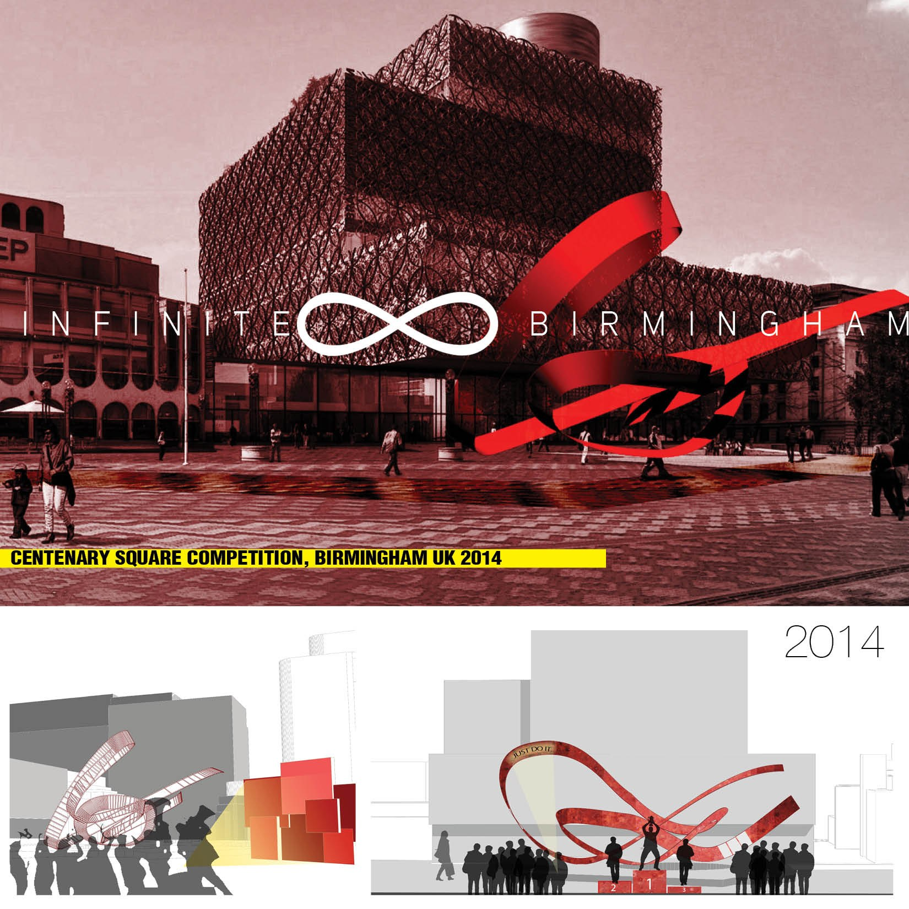
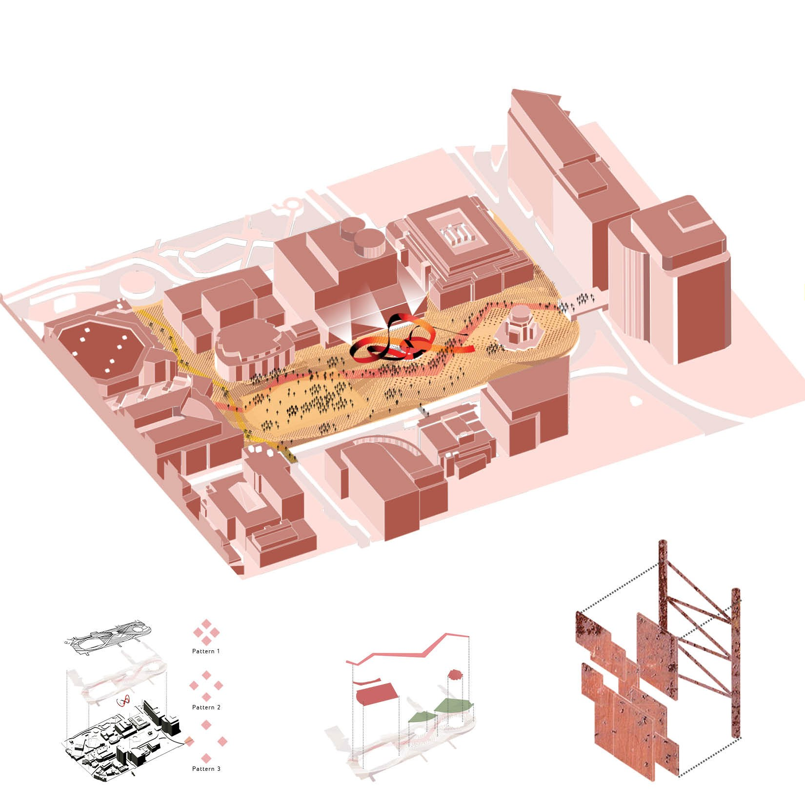

/ COMPETITION
Infinite Birmingham
A Centenary Square competition entry — a flexible public space anchored by a landmark loop forged from the city’s own recycled industrial scrap.

/ CONCEPT
A landmark that remembers the city’s industry — and adapts to its life.
Intervening in Centenary Square is a layered problem: the space carries many constraints and functions that had to be studied carefully. The strategy gives citizens a public space that connects to their past and points toward their future, while staying a flexible platform for activities still to come. Birmingham is a city defined by industrial heritage with an eye on a more sustainable future and the responsible use of resources.
The central structure recycles scrap metal for both function and effect. The material is sourced nearby — from the abandoned GKN screw factory, which produced screws and bolts during WWI — so reusing it as a monument reinforces the strategy. The resulting “loop” gives the square a distinct character and a stronger sense of ownership.
The loop is a landmark that reconfigures with each event: recycled metal boards over a steel mesh can be disassembled to suit the occasion — a projection surface for an art venue or Armed Forces Day, or a winners’ podium on the annual marathon. On the ground, the existing paving pattern is kept where people already gathered to perform in the western part of the square; the rest is reinvented in the same language, with broken red paths that align with the pedestrian and cycle connections of the Big City Plan.
